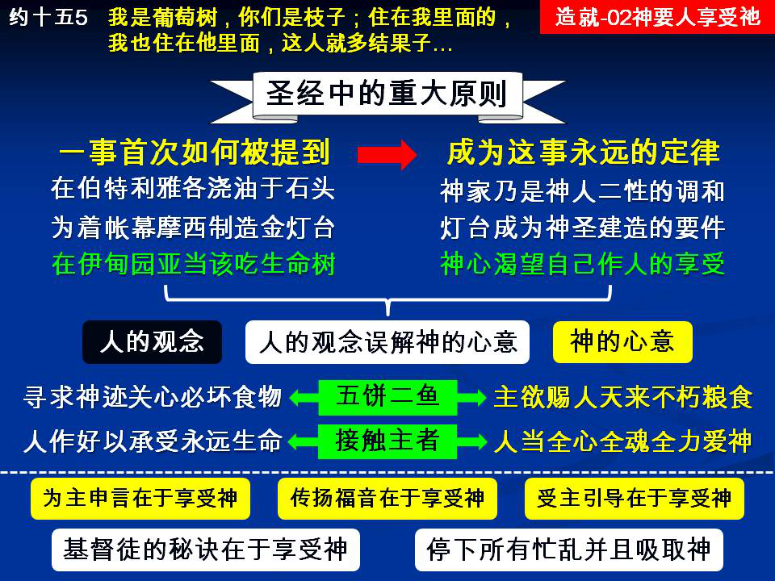

诗歌：补充214
重要经文：
约壹四章十三节：‘神将祂的灵赐给我们，从此就知道我们是住在祂里面，祂也住在我们里面。’
十六节：‘神爱我们的心，我们也知道也信。神就是爱；住在爱里面的，就是住在神里面，神也住在祂里面。’
约十五章五节：‘我是葡萄树，你们是枝子；住在我里面的，我也常在祂里面，这人就多结果子；因为离了我，你们就不能作什么。’
纲 目 要 点：
壹 神的心意是要人享受祂自己。
贰 人的观念误解神的心意。
叁 结果子是在于享受神。
肆 祷告是在于享受神。
伍 站讲台也是在于享受神。
陆 传福音也是在于享受神。
柒 受引导也是在于享受神。
捌 基督徒的秘诀就在于享受神。
信息选读：
神的心意是要人享受祂自己
在圣经中有一个非常重大的原则，就是每一类的事，头一次题到它的时候，那就是以后这类事一个永远的定律。在圣经里，头一次题到神之于人，乃是一个食物，摆在人跟前。那就是告诉我们，神是要给人来享受祂自己。
主在犹太人中间行了一个神迹，用五饼二鱼给五千人吃饱，还剩下零碎。祂说祂是从天上降下来的粮食，祂能把祂的肉、祂的血给我们吃喝，祂也说祂要进到我们里面，叫我们得着永远的生命。
人的观念误解神的心意
一直到今天，基督徒里面对于神的观念，还都不够准确。你亲近神，祷告神的时候，你还有一种普通的宗教观念。你也许还在那里想，我这个人应当好好的敬拜神。我应当在这一天里作这样的事，作那样的事，不作这样的事，不作那样的事。也许你也根据这些观念在神面前有一些的祷告，你在那里求神说，神，你恩待我，叫我能这样这样讨你的喜悦。但是我愿意告诉弟兄姊妹，这一种的祷告完全是出于宗教的观念。神从来没有要我们这样的祷告。神每一次要我们亲近祂的时候，都是把祂自己当作肥甘，当作食物，摆在我们跟前，给我们吃一个饱足。祂和我们的交通来往，并不是光谈事情的，祂和我们的交通来往，乃是把祂自己再一次的给我们享受。但就是这一个观念，我们堕落的人没有法子转过来。
结果子是在于享受神
你看一棵结果子的树，枝子上虽然结着好多果子，但那并不是枝子所作出来的，乃是枝子吸取树本里头的汁浆，把树本里头的丰富吸取到那里而长出来的。你若是问那枝子说，哦，你在这里结果子太辛苦了。它要告诉你说，没有这件事，我在这里结果子，实在都是我享受，一点都不是我拿出什么，也不是我作出什么，完全是我吸收树里面的丰富。我结果子越多，我就吸收得越多；我外面的果子越多，我里面的享受就越多。这些的果子一点都不是出于我，乃是出于树本，不过经过我就是了。这一个经过，就是我的享受。请记得，这就是基督徒。
祷告是在于享受神 站讲台也是在于享受神
祷告乃是吸取神自己，享受神自己。当你去接触祂的时候，祂会给你感觉说，你这个人还有多少的难处，还有多少的拦阻。你和祂之间还有多少间隔。你还怪人，你还不肯饶恕你的妻子，你还在那里忌恨别人。这些都是你和祂之间的间隔。你要一一的对付，一一的靠祂的血除掉。然后再在祂面前敬拜，瞻仰祂的荣美。主，你太美丽了，你太甘甜了，你就是我的生命，你就是我的能力，你就是我的话，你就是我的题目，你就是我的一切。你在那里和主交通，忘掉了讲台，一点不为讲台祷告，完全是享受主自己，和祂接起火来了。这就像装电灯一样，一接上火，电就供应过来了。你为讲台的信息祷告也是这样，不必管什么题目，也不必管什么层次，只要你里面一和主接起火来，里面摸着主，里面有主的同在，这就够了，你就可以站讲台了。当你站到讲台上去的时候，在你里面有一位主，祂作了你的享受，祂作了你的一切。你这一篇讲台就像树枝在外面结果子一样，你里面吸取主，外面就释放出去，这就是站讲台。
传福音也是在于享受神
弟兄姊妹，你若今天晚上去传福音，你应当先有半小时、一小时，来亲近主，单单来瞻仰祂的荣美，来和祂相交，来赞美祂几句。主，你太好了，你太美丽了，你是我的救主，你也是万人的救主，我来享受你，我来吸取你，我要活在你的面光中，我要住在你的殿宇里。你都不必想到传福音的问题，也不要想到你的口才，也不要想对人讲什么，全数都不必。你里头这样吸取了主自己，满了主自己，当你去见那位教授的时候，请你记得，不是你说话，是在你里头被你吸取的那位主，祂穿着你说话。结果你所说的话，都是你所吸取的主自己，人就不能不蒙恩。
受引导也是在于享受神
哦，你若懂得什么是和主交通，就要单单的来接触主自己，吸取主自己，享受主自己，这是捷径，非常便利。当你这样吸取祂的时候，享受祂够多的时候，请你记得，在一切的事上，只要祂和你同在，那就是祂的引导；只要祂不和你同在，那就不是祂的引导。祂的引导就是祂的同在。
基督徒的秘诀就在于享受神
所有基督徒的秘诀都在这里。不是你为神作了多少，乃是你享受神有多少；不是你为神作了什么，乃是你怎样来享受神。亲爱的弟兄姊妹，你要学这一个秘诀。你不必想作这个作那个。一直要学一件事，常常回到你的里面，再享受神自己。连你有了为难，有了重担，连你的孩子生了重病，你去祷告的时候，都不必挂念这些事。你要学习到神面前去享受祂，吸取祂。你忘掉了孩子的病，请你记得，你忘掉，祂不会忘掉。你记得很牢的时候，祂反而不管。你一直挂着说，主阿，我的兄弟拉撒路病了。主说，你急我不急。你要我去，我现在不去。他病了，我早就知道了，但是你这个祷告，我是不听的。你若不祷告，我反而去；你这一要我去，我非要等他死不可。不光死，还要等到他埋葬了、臭了，我才去。主就是这样。主并没有意思要我们为祂作什么，主只有一个意思，就是要我们学习吸取祂自己，享受祂自己。
1 请说明神的心意是要人享受祂自己。
2 请简述基督徒的秘诀什么。
